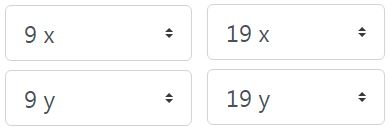
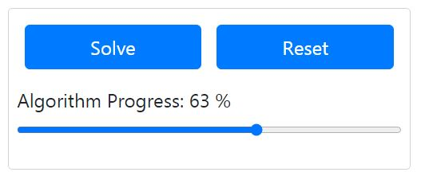
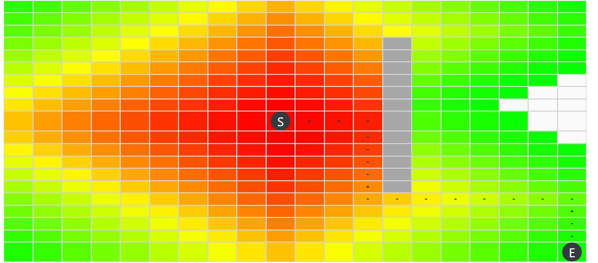

This tool can be used to visualise the step-by-step process that search algorithms use to find a 'target' vertex on a graph. The Breadth First Search (BFS) and and Djikstra's Shortest Path First algorithm are provided as options with this tool.
Step 1: Select a Start Coordinate and End Coordinate from the drop-down menu
Step 2: Select the Search Algorithm from the drop-down menu. Note: Only Djikstra's algorithm will provide the shortest path
Step 3: Click cells on the grid to create a 'walls' that form a maze
Step 4: Click the Solve button to find a path from the Start Coordinate to the End Coordinate
Step 5: Drag the Algorithm Progess slider to shown the step-by-step progress of the algorithm. Your grid should look something like the following:
Step 6: To draw a new maze, just click the or Reset button